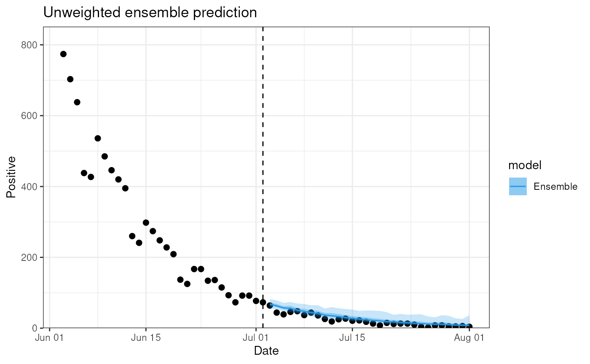
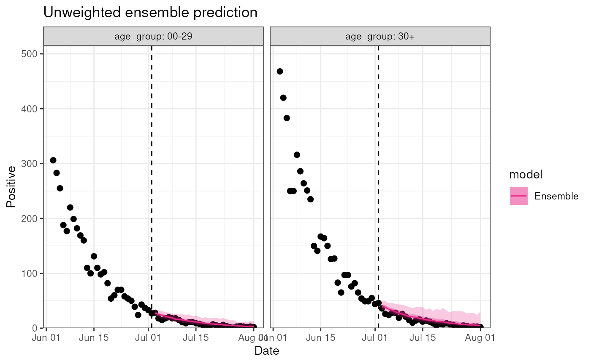
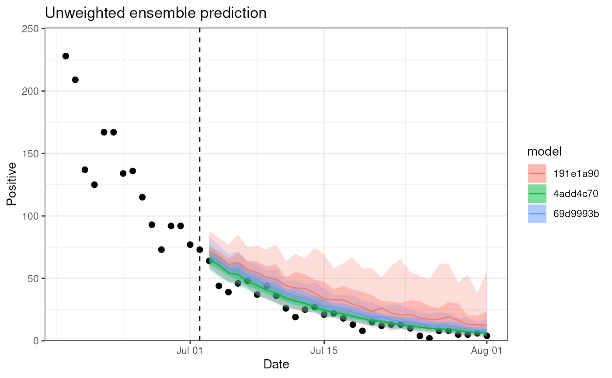

Introduction
The goal of diseasy is to create and manipulate
ensembles of disease models. This vignette will show how to create
ensembles and how to use them to make predictions.
Configuration of the models
Different models needs varying amount of configuration before they can enter into an ensemble. To include a model template in your ensemble, you would need to consult the documentation for the template to determine the steps needed to configure models from that template.
In this vignette, we create ensembles using the
DiseasyModelG0 and DiseasyModelG1 templates
which are nearly configuration free.
Observables module
All model template requires a configured observables module.
To configure this module we must:
- Specify the source of the data (i.e. which
diseasystoreto use). For this example, we will use the example data bundled with the package (?DiseasystoreSeirExample) - Specify a data base connection.
diseasystorerequires us to connect to a data base to store features in. For this example, we will use an in-memory SQLite data base. - Specify the
last_queryable_datefor the observables module. This date determine which data the models can “see”, i.e. inform the ensemble, while everything after this date is kept from the ensemble.
observables <- DiseasyObservables$new(
diseasystore = DiseasystoreSeirExample,
conn = DBI::dbConnect(RSQLite::SQLite())
)
observables$set_last_queryable_date(
observables$ds$max_end_date - lubridate::days(50)
)Creating ensembles
With the functional modules configured, we can now use the
combineasy() function to create an ensemble.
This function takes three arguments:
- model_templates: A list of model templates to use in the ensemble.
- modules: A combination of functional modules to load into each model template
- parameters: A combination of model parameters to load into each model template
All combinations of these three arguments are used to construct the ensemble, which means that the size of the ensemble can rapidly increase.
Example 1
To begin, we create a small ensemble using only one model template
DiseasyModelG1 and omitting the optional season module. For
the ensemble, we will supply three different parameter sets which
changes the training size of the model.
ensemble <- combineasy(
model_templates = list(DiseasyModelG1),
modules = tidyr::expand_grid(
observables = list(observables)
),
parameters = tidyr::expand_grid(
training_length = list(
c("training" = 7, "testing" = 0, "validation" = 0),
c("training" = 14, "testing" = 0, "validation" = 0),
c("training" = 21, "testing" = 0, "validation" = 0)
)
)
)The output of combineasy() is simply a list of model
instances which we give the class DiseasyEnsemble.
In doing so, we can use the print(),
summary(), predict() and plot()
functions to get a quick overview of the ensemble.
print(ensemble)
#> DiseasyEnsemble: DiseasyModelG1 (hash: 8a109), DiseasyModelG1 (hash: 336db), DiseasyModelG1 (hash: cdd97)
summary(ensemble)
#> DiseasyEnsemble consisting of:
#> DiseasyModelG1: 3To produce predictions and plots from the ensemble, we need to at least specify the following:
- observable: The observable to predict
- prediction_length: The number of days to predict
predict(ensemble, observable = "n_positive", prediction_length = 30) |>
head()
#> ■■■■■■■■■■■ 33% | ETA: 4s
#> ■■■■■■■■■■■■■■■■■■■■■ 67% | ETA: 2s
#> # A tibble: 6 × 5
#> date n_positive realisation_id weight model
#> <date> <dbl> <chr> <dbl> <chr>
#> 1 2020-04-12 30717. 1 1 8a1095bc95538ecae2883ac0cea5df76
#> 2 2020-04-13 23174. 1 1 8a1095bc95538ecae2883ac0cea5df76
#> 3 2020-04-14 31103. 1 1 8a1095bc95538ecae2883ac0cea5df76
#> 4 2020-04-15 30758. 1 1 8a1095bc95538ecae2883ac0cea5df76
#> 5 2020-04-16 24464. 1 1 8a1095bc95538ecae2883ac0cea5df76
#> 6 2020-04-17 13287. 1 1 8a1095bc95538ecae2883ac0cea5df76
plot(ensemble, observable = "n_positive", prediction_length = 30)
One of the advantages of diseasy is its ability to
easily stratify the models at different levels. In this example, the
data in DiseasystoreSeirExample is stratified by age, and
we can run our ensemble on each age group separately:
plot(
ensemble,
observable = "n_positive",
stratification = rlang::quos(age_group),
prediction_length = 30
)
#> ■■■■■■■■■■■ 33% | ETA: 5s
These stratifications are flexible and we can stratify to
our hearts desire, limited only by the stratification level in the
diseasystore:
plot(
ensemble,
observable = "n_positive",
stratification = rlang::quos(
age_group = dplyr::case_match(
age_group,
"00-29" ~ "00-29",
"30-59" ~ "30+",
"60+" ~ "30+"
)
),
prediction_length = 30
)
The plot() method has additional optional arguments
which can be used to customize the plot further:
- by_model: Should the results from the individual models be plotted instead?
- context_length: The number of observations leading up the prediction to include in the plot.
plot(
ensemble,
observable = "n_positive",
prediction_length = 30,
context_length = 15,
by_model = TRUE
)
Example 2
Now we create a larger ensemble using both model template
(DiseasyModelG0 and DiseasyModelG1) and the
parameter settings from before.
ensemble <- combineasy(
model_templates = list(DiseasyModelG0, DiseasyModelG1),
modules = tidyr::expand_grid(
observables = list(observables)
),
parameters = tidyr::expand_grid(
training_length = list(
c("training" = 7, "testing" = 0, "validation" = 0),
c("training" = 14, "testing" = 0, "validation" = 0),
c("training" = 21, "testing" = 0, "validation" = 0)
)
)
)The ensemble now consists of models:
print(ensemble)
#> DiseasyEnsemble: DiseasyModelG0 (hash: 5911e), DiseasyModelG0 (hash: a604b), DiseasyModelG0 (hash: 17848), DiseasyModelG1 (hash: 8a109), DiseasyModelG1 (hash: 336db)
summary(ensemble)
#> DiseasyEnsemble consisting of:
#> DiseasyModelG0: 3
#> DiseasyModelG1: 3And again we can use the plot() method to visualize the
predictions from the ensemble:
plot(ensemble, observable = "n_positive", prediction_length = 30)
Example 3 - A large SEIR model ensemble`
In this example, we will create a large ensemble of SEIR models using
the DiseasyModelOdeSeir template.
To do so, we will create a few different instances of the functional
modules, DiseasyActivity, DiseasySeason and
DiseasyImmunity. Which each represent different mechanistic
scenarios to include in the model.
Activity module
# Create three different contact bases for the ensemble
# All uses the Danish populations but with different contact matrices
contact_basis_1 <- contact_basis_2 <- contact_basis_3 <- contact_basis$DK
contact_basis_2$contacts <- contact_basis$SE$contact
contact_basis_3$contacts <- contact_basis$NO$contact
# Create an activity instance with the Danish changes in restrictions
activity <- DiseasyActivity$new()
activity$set_activity_units(dk_activity_units)
activity$change_activity(date = as.Date("2020-01-01"), opening = "baseline")
# Load the different contact bases to create distinct activity instances
activities <- list(
contact_basis_1,
contact_basis_2,
contact_basis_3
) |>
purrr::map(~ {
act <- activity$clone()
act$set_contact_basis(contact_basis = .)
return(act)
})
rm(activity)Immunity module
# Use different waning immunity models for the ensemble
no_immunity <- DiseasyImmunity$new()
no_immunity$set_waning_model("no_waning")
# Exponential waning
immunities <- c(60, 120, 180) |>
purrr::map(~ {
immunity <- DiseasyImmunity$new()
immunity$set_exponential_waning(time_scale = .)
return(immunity)
}) |>
c(no_immunity)Observables module
Beyond setting the different scenarios for the models, we also need
to define the “incidence” observable for the
DiseasyModelOdeSeir class. We here use the number of
observed positive cases adjusted for under-reporting.
# Create an estimator for the incidence
observables$define_synthetic_observable(
name = "incidence",
mapping = \(n_positive, n_population) n_positive / (n_population * 0.65)
)Create the ensemble
With the functional modules configured, we can now use the
combineasy() function to create a large SEIR ensemble. We
create the models with different compartment structures (i.e. different
number of exposed, infected and recovered compartments) to provide
structurally different models.
# Create the ensemble
seir_ensemble <- combineasy(
model_templates = list(DiseasyModelOdeSeir),
modules = tidyr::expand_grid(
activity = activities,
season = seasons,
immunity = immunities,
observables = list(observables)
),
parameters = tidyr::expand_grid(
# Hyper parameters
"compartment_structure" = list(
c("E" = 1L, "I" = 1L, "R" = 1L),
c("E" = 2L, "I" = 1L, "R" = 1L),
c("E" = 2L, "I" = 3L, "R" = 1L),
c("E" = 1L, "I" = 1L, "R" = 3L),
c("E" = 2L, "I" = 1L, "R" = 3L),
c("E" = 2L, "I" = 3L, "R" = 3L)
),
"age_cuts_lower" = list(
c(0, 30, 60)
),
# Parameters
"disease_progression_rates" = list(
c("E" = 1 / 2.1, "I" = 1 / 4.5)
),
"overall_infection_risk" = list(
0.025
)
)
)
summary(seir_ensemble)
plot(seir_ensemble, observable = "incidence", prediction_length = 30)